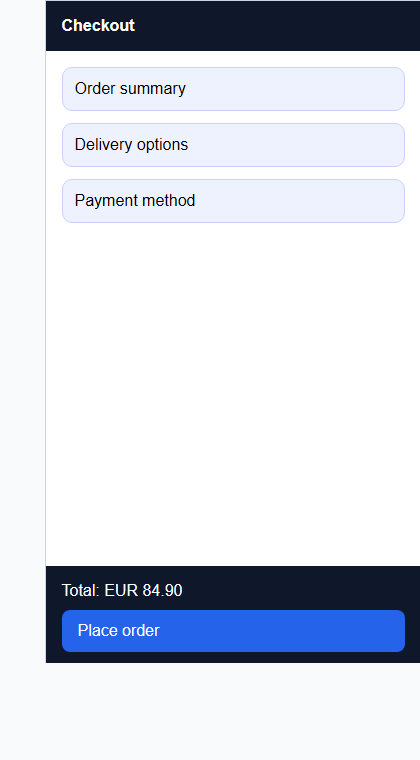

Responsive Testing Report
Summary
| Field | Value |
|---|---|
| Schema version | 1.0 |
| Generated at | 2026-03-28T10:00:00Z |
| Framework | playwright |
| Target | checkout page |
| Command | npx playwright test tests/checkout.spec.ts --project=chromium |
| Reused tests | 1 |
| New tests | 0 |
| Total results | 3 |
| Passed | 2 |
| Failed | 1 |
| Skipped | 0 |
Reused Tests
tests/checkout.spec.ts
New Tests
- None
Viewports
| Name | Width | Height | Category |
|---|---|---|---|
| mobile-small | 375 | 667 | mobile |
| tablet-portrait | 768 | 1024 | tablet |
| desktop-wide | 1440 | 900 | desktop |
Results
| Test | Viewport | Status | Duration ms | Notes | Artifacts |
|---|---|---|---|---|---|
| checkout happy path | desktop-wide | passed | 4132 | Desktop checkout layout remained stable and primary actions stayed visible. | desktop-wide-checkout.png |
| checkout happy path | mobile-small | failed | 4891 | Primary checkout button clipped below sticky footer. | mobile-small-checkout.png |
| checkout happy path | tablet-portrait | passed | 4388 | Tablet checkout layout remained stable and form sections stayed visible. | tablet-portrait-checkout.png |
Findings
| Severity | Viewport | Area | Message | Artifact |
|---|---|---|---|---|
| high | mobile-small | checkout footer | Primary checkout button is partially hidden by the sticky footer. | mobile-small-checkout.png |
Screenshots
desktop-wide - checkout happy path

Desktop checkout layout remained stable and primary actions stayed visible.
desktop-wide-checkout.png
mobile-small - checkout happy path

Primary checkout button clipped below sticky footer.
mobile-small-checkout.png
tablet-portrait - checkout happy path
{kind=link}

Tablet checkout layout remained stable and form sections stayed visible.
tablet-portrait-checkout.png
Artifacts
desktop-wide-checkout.pngmobile-small-checkout.pngtablet-portrait-checkout.png
Next Actions
- Adjust the sticky footer layout for narrow mobile widths.
- Rerun checkout responsive coverage after the layout fix.